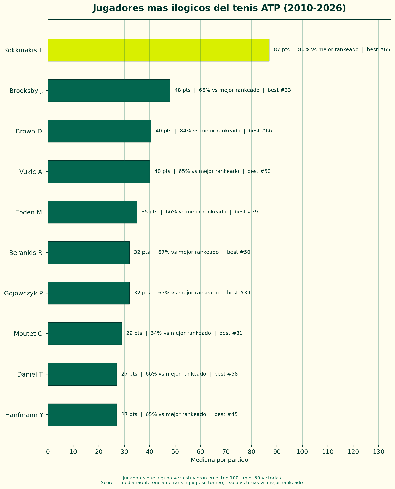
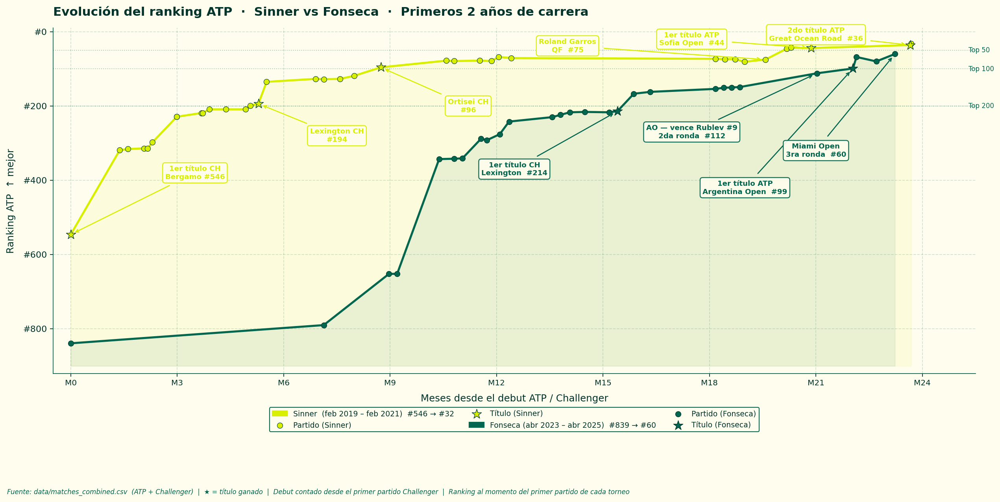

Destacado

Análisis · Rankings
¿Quién es el jugador más ilógico del tenis?
El tenis tiene una lógica simple: gana el mejor rankeado. Pero hay jugadores que parecen no entender eso. Medimos quiénes le ganan más seguido a rivales mejor posicionados — y lo hacen de forma consistente.
Leer análisisMás análisis
Machine Learning · Fantasy · ATP 250
Bucharest con datos: armé mi equipo de Smash It con machine learning

Comparativa · Jóvenes talentos
Sinner vs Fonseca: ¿quién tuvo los mejores primeros 2 años?

Estructura del circuito
¿Cuántos tenistas llegan realmente al Top 100?
Próximamente
Análisis